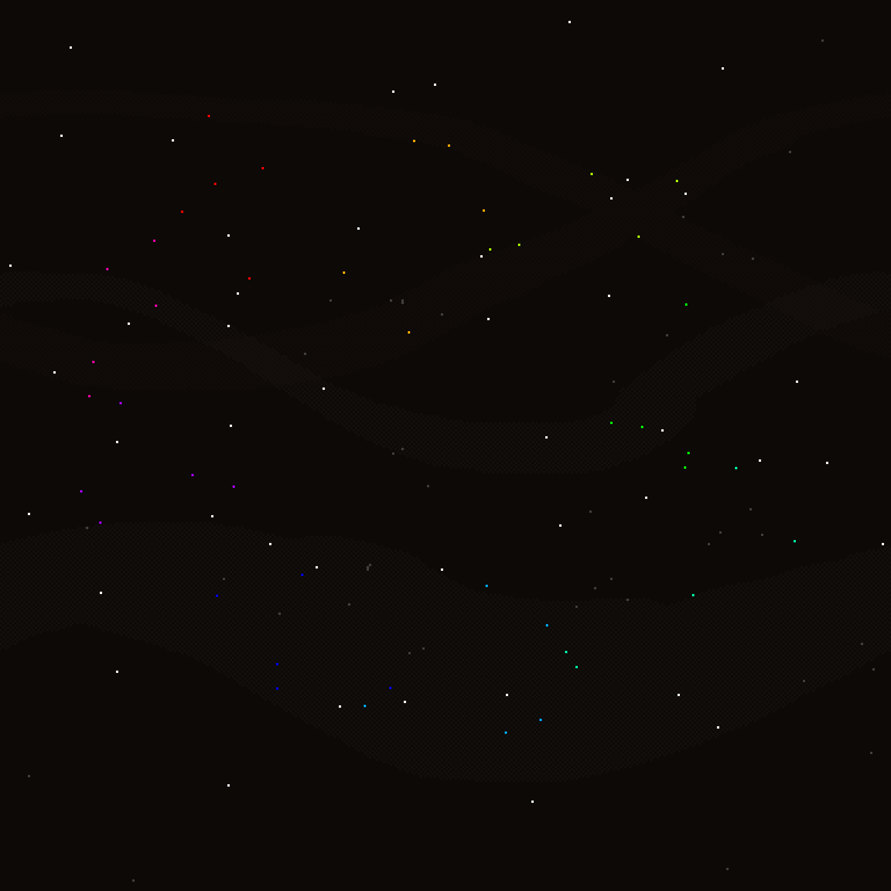
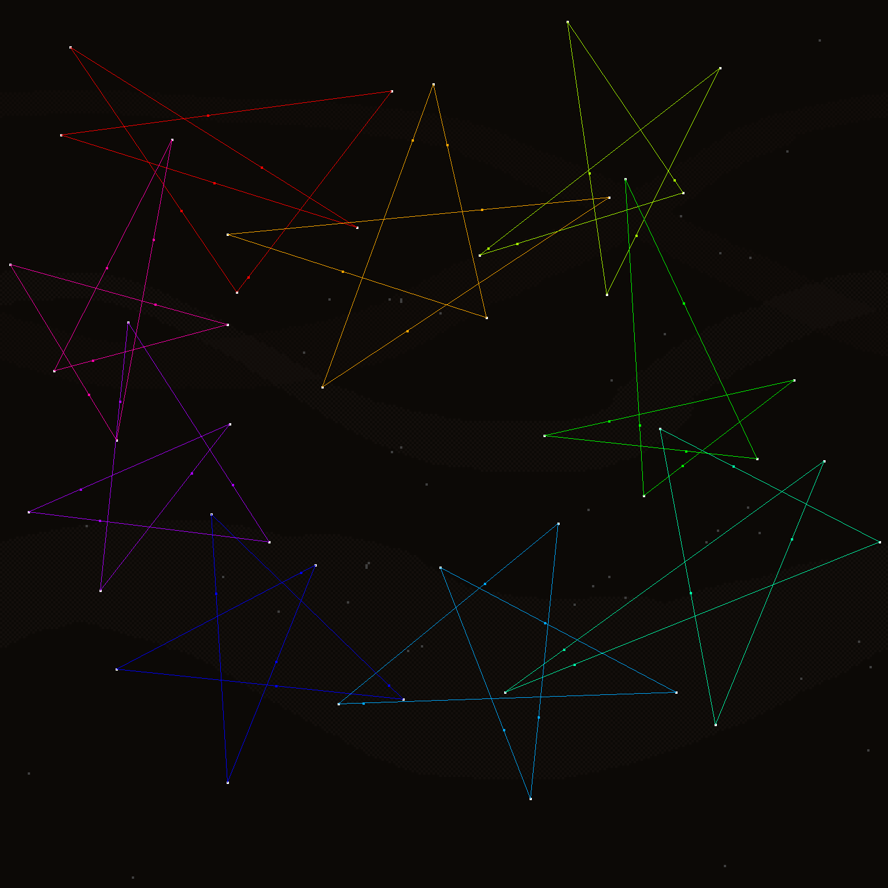
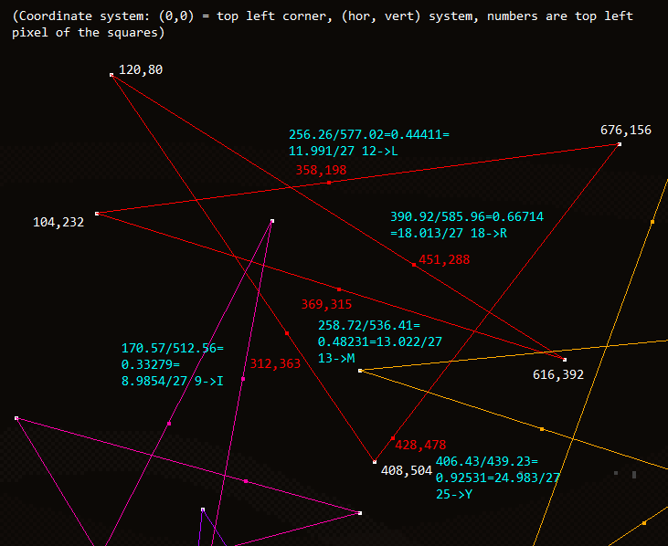

Solution: Observatory
Answer: SALMON
Written by Lewis Chen
Upon loading this puzzle, we can probably notice some rather major changes - for one, the background is very different, and the rest of the website elements have become translucent. The flavortext is also rather minimal, so it seems that the only real data that we get is the background.
From the flavortext ("year after year"), or by recalling the background of 2018's hunt, the star field background may seem reminiscent to last year's background. Indeed, it is very similar, up to replicating the positions of many of the stars in last year's hunt. However, the remaining stars have moved. If we count up the stars, we can determine both pictures have the same number of stars (86, to be precise), and 45 of the stars have changed positions.
By looking at this year's background, however, we might notice something slightly amiss - in fact, the stars that have changed positions are actually off-white, with a tinge of color! Moreover, there are nine colors, each with five stars, and the colors are arranged in a circle. However, there is not much additional information encoded by the colors, as they range from #ffcccc, #eeddcc, #ddeecc, #ccffcc, and so on - completely evenly distributed. At least this means that we can amplify the colors at no cost so we can stop straining our eyes, and perhaps show the original 2018 stars. (The unchanged stars ultimately have no bearing on the solution, so we will fade them from here on out.)

Now we can stare at the stars some more (you know, observing them), and we might notice that these new stars are collinear with two stars in the original picture. This can also be motivated by another part of the flavortext, "how much of the way they are to their destinations", which might make us think what paths the stars are taking, as well as what their starts and destinations are. Following up with the collinearity idea, we can connect them up, and something neat shows up:

Wow, we've made a bunch of 5-pointed star "constellations"! These stars indeed respect the color groupings, so once we connect some of the stars we may also use the structure of the connections to help us build the rest of the stars. Now, the flavortext suggests that we want to look at the distance ratios to see if a star is, say, a third or half of the way to its destination. We don't know which star is a starting point and which is the endpoint, so let's just guess, say, clockwise.
Doing so gives us numbers that are very close to multiples of 1/27, so we should multiply them by 27. Since no changed star is on a starting or ending point, that means that we get an integer between 1 and 26. So the natural thing to do is to generate letters, and we get five letters for each color. As an example, here is a picture with the red (top left) star completely worked out:

Considering these letters, it seems like we can add a single letter to each "ring" in order to form a word. This should be unique (or at least, there should be a significantly more compelling option over any alternatives). Doing this for all nine colors, we see that the added letters spell out FISH TAXON reading clockwise, which is a rather ambiguous cluephrase. Note that we are not given the starting letter in each cycle, so it is up to solvers to determine this.
| Color | Letters | Completed Word | Extract |
|---|---|---|---|
| Red | IRMLY | FIRMLY | F |
| Greenish red | VGORS | VIGORS | I |
| Reddish green | LYVAT | VASTLY | S |
| Green | FLIGT | FLIGHT | H |
| Bluish green | LIVEH | LIVETH | T |
| Greenish blue | HLYRS | RASHLY | A |
| Blue | SYLYL | XYLYLS | X |
| Reddish blue | STSGH | GHOSTS | O |
| Bluish red | GRULI | RULING | N |
Of course, we didn't have to just go clockwise - we could go counterclockwise as well. Performing these steps in the opposite direction is equivalent to taking a string, reversing it, and then applying the Atbash cipher (since a letter at k/27 gets mapped to (27-k)/27). Doing so, we get yet another cluephrase: PINK SHADE. This, by itself, is also ambiguous. (We should also reverse our reading order as well in order to be consistent with our rotation.)
| Color | Letters | Completed Word | Extract |
|---|---|---|---|
| Bluish red | ROFIT | PROFIT | P |
| Reddish blue | STHGH | THIGHS | I |
| Blue | OBOBH | HOBNOB | N |
| Greenish blue | HIBOS | KIBOSH | K |
| Bluish green | SVERO | VERSOS | S |
| Green | GTROU | TROUGH | H |
| Reddish green | GZEBO | GAZEBO | A |
| Greenish red | HILTE | HILTED | D |
| Red | BONIR | BONIER | E |
However, combining the two cluephrases, by far the most common FISH TAXON that is also a PINK SHADE is SALMON, which is the answer.
Author’s Notes
It's probably easier to implement the solution by diving into the source code, but I know that we promised that teams would not have to inspect the HTML source. This is why the elements have become translucent - so that teams who don't look at the code can still get the positions of the stars. Since what matters is the relative positions of the stars, you can perform the steps of this puzzle under any zoom setting (as long as you can still see the stars at all), as long as you remain consistent when comparing (or if you use the wind as a guide to overlay the pictures). In order to go source-less to find the original pic, you can find a page with few elements to block your view of the stars. In particular, on the 2018 site you can go to a page that 404's which gives a pretty great view of the background! It's not often that you'd want to intentionally go to a 404 page as a helpful yet subtle solution step.
I constructed this puzzle in several stages. The task for finding valid atbash-and-reverse pairs, even given cyclic and one letter removal freedoms (though the latter is also a constraint in that I needed specific pairs of letters to make things work) was a hefty task and produced some dubious pairs. Fortunately, after the first testsolve (who had to endure such gems like VROUWS, FLITED, and VOLING), we got together and managed to improve on quite a few of the worst offenders. (XYLYLS is probably unavoidable, given the need to add an X, unfortunately.)
Producing the image involved fairly large reliance on Python's PIL library. I also had to manually remove all of the stars from the original pic in order to replicate the wind trail effect (simply filtering out all of the white pixels is not enough, since some of these pixels are covering up what would otherwise be part of the wind trail).
As for the inspiration of this puzzle: When I saw the background to 2018’s hunt, I knew that the dot pattern of the background was fertile ground for a puzzle. Sadly I wasn’t able to get that idea done in time for last year (which probably would’ve at least made the first step much more readily accessible - sorry!), so I saw 2019 as the latest possible time to create such a puzzle. (And a puzzle about looking towards the stars does make some thematic sense in a hunt with aliens.) Several possible methods of extraction were floated (for example, your typical codesheet puzzle which we didn’t have yet (which would become Race for the Galaxy’s first round)), but when I thought about reading letters going in both directions, I knew that it could potentially be an interesting method of extraction, giving teams two rather ambiguous cluephrases that when combined became crystal clear.
Next came finding words that fit the constraints given. This was really hard! I tried using many dictionaries, and it turns out there are only maybe on the order of 100-200 possible word pairs. I started with PINK SHADE*, and noticed that I could go backwards (of course) and get FISH, and after a lot of trial and error and Nutrimatic came up with TAXON to fill the rest of the words. The rest was relatively straightforward, if a bit tedious - I had to get the coordinates of all of the original stars and annotate them (so rest assured, forward-solvers - you weren’t alone in finding coordinates), but fortunately PIL (Python Imaging Library) makes things not too hard. And if you want the code used to generate everything, well here you go (but be warned, it’s really, really, messy given that they’re essentially one-time use scripts that didn’t really need any maintenance). The code runs in three stages - stage 1 generates word pairs, stage 2 processes word pairs (using strings copy/pasted from I/O into the program code, haha), and stage 3 plots the stars according to words (which have to be hand-picked outside the program).
One thing that I wanted to try to capture was a minimalist approach to presentation. Initially in testsolving, it was even harder (the color groupings weren’t given and everything was pure white). So thankfully that was nerfed. I can also concede that the flavortext isn’t as helpful as it could have been, but it was definitely a struggle to try to balance the amount clued in the flavortext while at the same time keep the flavor succinct and have a reasonable surface reading. At least I hope that the steps had some self-confirming portions and that the discovery of certain ahas (like drawing out stars) was worthwhile!
*The fact that this shows up again in the meta was an unfortunate oversight, but I was not aware of the meta mechanisms when writing the puzzle.